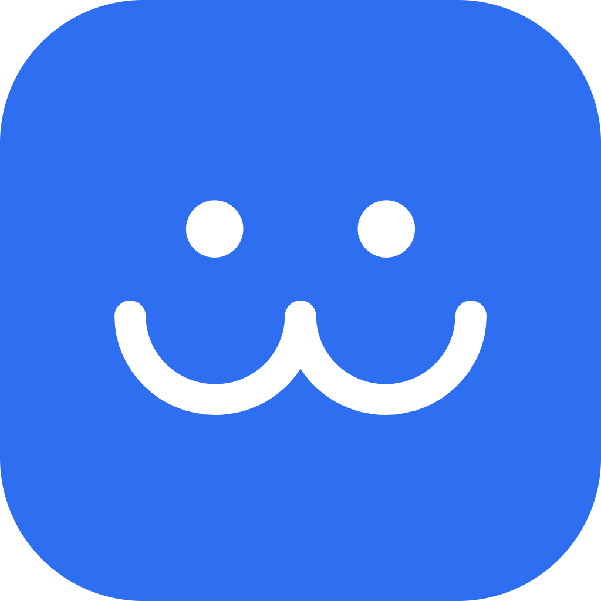

위니브월드노트북에 코드를 쓰고 실행하면 월드의 캐릭터가 움직여요.
스토리 22편(입문 11편, 기초 11편)을 차례로 풀며 파이썬을 익혀요.
코드를 처음부터 다시 실행해 항목마다 맞았는지 보여 줘요.
정답 값은 보여 주지 않아요.
푼 스토리는 목록에 표시되고, 한 챕터를 모두 풀면
인증서를 내려받을 수 있어요.
설치하면 파이썬이 앱 안에서 돌아요. 컴퓨터실처럼
인터넷이 느리거나 없는 곳에서도 그대로 써요.
선생님용·학생용 교안 PDF를 앱 메뉴에서 바로 내려받아요.
어두운 화면도 골라 쓸 수 있어요.
weniv-world-1.0.0-windows-x64-setup.exeweniv-world-1.0.0-windows-x64-portable.exeweniv-world-1.0.0-mac-arm64.dmgweniv-world-1.0.0-mac-x64.dmg웹에서는 위니버시티 학습 도구 > 위니브월드에서 바로 쓸 수 있어요.
설치판과 웹의 진행 기록은 따로 남아요.